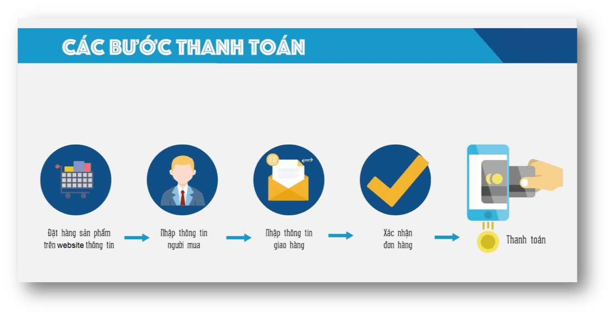

Quý khách vào website bảo hiểm trực tuyến của PTI http://etpasaigon.vn
Quý khách chọn 1 sản phẩm trên trang chủ website hoặc trên menu chính của trang để xem thông tin chi tiết về sản phẩm và xem báo giá sản phẩm mình quan tâm
Quý khách có thể tìm kiếm thêm các thông tin về website khi liên hệ đến số điện thoại hotline – 1900 6727 của PTI để trao đổi cụ thể hơn.
Khi Quý Khách tìm hiểu đầy đủ cũng như đồng ý với báo giá mà PTI đưa ra, sau khi điền đầy đủ thông tin theo yêu cầu (các mục có dấu *), Quý khách có thể ấn nút “Tiếp tục” để tiến hành xác nhận thông tin. Sau khi xác nhận thông tin chính xác về thông tin bên mua, thông tin đối tượng bảo hiểm, Quý khách có thể ấn “Tiếp tục” để điền đầy đủ thông tin giao hàng và tiến hành thanh toán phí bảo hiểm.
Để có thể thực hiện thanh toán theo các phương thức này, Quý khách cần thực hiện theo các bước hướng dẫn.
Sau khi Quý khách thực hiện thành công việc thanh toán phí bảo hiểm cho PTI, hệ thống sẽ tự động gửi email/SMS đến Quý Khách để xác nhận giao dịch thành công. Giấy chứng nhận bảo hiểm sẽ được chuyển đến tận tay Quý Khách trong vòng 48h làm việc theo địa chỉ Quý khách yêu cầu.
Tên đơn vị: Công ty Bảo hiểm Bưu điện Sài Gòn
Địa chỉ: 24C Phan Đăng Lưu, Phường 6, Quận Bình Thạnh, TP.Hồ Chí Minh
Hotline/Call center: 1900 6727
Điện thoại: 028 3 841 0576
Fax: 08 3 841 0577
Sau khi Quý khách thanh toán thành công và PTI không từ chối chấp nhận bảo hiểm thì đơn bảo hiểm của Quý Khách đã được chấp nhận. Trường hợp Quý Khách muốn hoàn phí/ hủy đơn bảo hiểm thì phải thực hiển theo hướng dẫn của PTI. Việc hoàn phí/hủy đơn bảo hiểm phải tuân thủ các quy định trong Quy tắc bảo hiểm của từng sản phẩm bảo hiểm và các quy định hiện hành của PTI.
Quý khách chỉ được hủy đơn và hoàn 100% phí bảo hiểm trong trường hợp PTI từ chối chấp nhận bảo hiểm cho Quý Khách.
Sản phẩm áp dụng hoàn phí/hủy đơn bảo hiểm:
Sản phẩm không áp dụng hoàn phí/ hủy đơn bảo hiểm:
Để đảm bảo người yêu cầu hủy đơn/ hoàn phí đúng là Bên mua bảo hiểm/ Người được bảo hiểm, chúng tôi yêu cầu các cách hủy đơn/ hoàn phí bảo hiểm như sau:
Cách 1: Khách hàng đến trực tiếp tại văn phòng PTISG mang theo chứng minh nhân dân (CMND) hoặc căn cước công dân (CCCD) bản gốc + đơn yêu cầu hủy đơn/ hoàn phí để chúng tôi đối chiếu đúng là Bên mua bảo hiểm/ Người được bảo hiểm.
Cách 2: Khách hàng gửi đơn yêu cầu đến PTI Sài Gòn có xác nhận chữ ký của cơ quan công chứng + bản sao CMND hoặc CCCD có công chứng/ chứng thực + đơn yêu cầu hủy đơn/ hoàn phí.
Sau khi chúng tôi xác định người yêu cầu đúng là Bên mua bảo hiểm/ Người được bảo hiểm, chúng tôi sau đó sẽ phát hành Endorsement về việc hoàn phí và khoản phí hoàn lại theo quy định của từng sản phẩm bảo hiểm. Khách hàng sẽ phải chịu các chi phí hủy đơn/ hoàn phí liên quan bao gồm không giới hạn chi phí chuyển phát nhanh gửi chứng từ cho Khách hàng.
Trường hợp thông tin trên GCNBH không đúng so với thông tin đăng ký của Quý Khách do lỗi sai sót của PTI thì PTI bằng chi phí của mình có trách nhiệm điều chỉnh lại thông tin trên GCNBH theo đúng yêu cầu của Quý Khách.
Trường hợp phải thay đổi thông tin trên GCNBH không phải do lỗi của PTI thì người được bảo hiểm phải tuân thủ theo các quy định về việc thay đổi thông tin trên GCNBH và tất cả các chi phí phát sinh (nếu có) cho việc thay đổi thông tin này. Trường hợp này, Quý khách phải chủ động liên hệ và làm theo hướng dẫn của PTI để tiến hành thủ tục thay đổi thông tin trên GCNBH. Quý khách phải chịu chi phí phát sinh cho việc sửa đổi/ bổ sung này bao gồm nhưng không giới hạn chi phí chuyển phát nhanh chứng từ cho Quý khách.
Trong trường hợp các thông tin thay đổi không làm ảnh hưởng đến quyền lợi bảo hiểm của Khách hàng và không làm thay đổi rủi ro bảo hiểm thì chúng tôi có thể cập nhật thông tin trên hệ thống mà không cần gửi GCNBH mới cho Khách hàng để tiết kiệm chi phí cho Quý Khách.
Bước 1: Khách hàng gọi tới 19006727 để yêu cầu sửa đổi bổ sung
Bước 2: PTI tiếp nhận và xử lý yêu cầu.
Bước 3: PTI thông báo kết quả cho Khách hàng theo 3 cách:
• Liên hệ đến Trung tâm dịch vụ khách hàng của Bảo hiểm PTI theo hotline 1900 6727 hoặc email: tpa_pti@pti.com.vn
Trường hợp khách hàng đã thanh toán bằng hình thức chuyển khoản, thẻ ATM nội địa/ thẻ VISA, Master Card, JCB, cổng thanh toán và các loại ví điện tử, nhưng PTI không chấp nhận bảo hiểm thì trong vòng 10 ngày làm việc từ khi thông báo từ chối bảo hiểm, PTI sẽ hoàn tiền trực tiếp vào tài khoản thẻ ATM nội địa/ thẻ VISA, Master Card, JCB, cổng thanh toán và ví điện tử của Quý khách hàng (Không áp dụng nhận tiền mặt).
Trường hợp khách hàng đã thanh toán và bảo hiểm đã có hiệu lực nhưng Quý khách có đơn xin hủy hợp đồng bảo hiểm và được PTI chấp nhận thì trong vòng 10 ngày làm việc kể từ khi chấp nhận hoàn phí, PTI sẽ trả lại cho khách hàng phần phí bảo hiểm còn lại theo phương thức thuận lợi cho Quý Khách.
Hình thức thanh toán trả trước áp dụng cho tất cả các sản phẩm bảo hiểm trên website. Với hình thức này, PTI yêu cầu Quý khách phải thanh toán phí bảo hiểm trước khi được PTI cấp Giấy chứng nhận bảo hiểm.
Hiện PTI đang hỗ trợ các hình thức thanh toánh trả trước sau:
Sau khi Quý khách đã đặt mua bảo hiểm và đã thanh toán phí bảo hiểm đầy đủ, PTI sẽ cấp GCNBH theo các cách sau:
Đối với các sản phẩm chấp nhận thanh toán trực tuyến: Sau khi Quý khách thanh toán thành công, hệ thống sẽ ngay lập tức gửi xác nhận hiệu lực bảo hiểm bằng tin nhắn SMS cho Quý Khách đến số điện thoại Quý khách đăng ký, và gửi GCNBH điện tử đến email Quý khách đăng ký (GCNBH điện tử có giá trị pháp lý như GCNBH bản cứng).
Chúng tôi sẽ chuyển GCNBH bản cứng cho Quý khách (trong trường hợp bắt buộc phải có bản cứng theo luật định như bảo hiểm TNDSBB hoặc theo yêu cầu của Quý khách) trong vòng 48h làm việc kể từ thời điểm chấp nhận bảo hiểm;
Trường hợp tôi khai báo sai thông tin khi đăng kí mua bảo hiểm trên trang web thì tôi phải làm thế nào?Trường hợp phát hiện thông tin không chính xác thì Quý khách có thể liên hệ đến số điện thoại Hotline bảo hiểm trực tuyến của PTI để được hướng dẫn việc sửa đổi/bổ sung thông tin. Chúng tôi khuyến nghị khách hàng kiểm tra thông tin ngay sau khi nhận được GCNBH điện tử và yêu cầu PTI sửa đổi ngay lập tức để tránh các chi phí phát sinh bao gồm chi phí chuyển phát nhanh. Trong trường hợp thông tin trên GCNBH không chính xác do Quý Khách khai báo sai (không do lỗi của PTI) và Quý khách yêu cầu sửa đổi thông tin, Quý khách có thể chịu các chi phí phát sinh bao gồm chi phí chuyển phát nhanh GCNBH mới cho Quý khách.
Số điện thoại Hotline bảo hiểm trực tuyến của PTI là: 1900 6727
Nếu giấy chứng nhận bảo hiểm của tôi bị bị thất lạc trong khi giao nhận thì tôi phải làm như thế nào?Quý khách vui lòng gọi đến đến số điện thoại Hotline bảo hiểm trực tuyến của PTI để thông báo qua hotline 1900 6727 Trường hợp giấy chứng nhận bảo hiểm bị thất lạc do lỗi của PTI hoặc đối tác giao nhận của PTI, chúng tôi sẽ cấp lại GCNBH mới cho quý khách mà không thêm thu thêm chi phí. Trường hợp giấy chứng nhận bảo hiểm không giao được đến địa chỉ Khách hàng do Khách hàng ghi sai thông tin nhận hàng trên website, Chúng tôi sẽ liên hệ Khách hàng tiến hàng giao lại theo đúng địa chỉ mới. Tùy từng trường hợp, khách hàng có thể chịu chi phí chuyển phát cho các lần giao hàng tiếp theo.
Mua bảo hiểm trực tuyến qua trang web này tôi có thể được giảm phí không?Quý khách sẽ có cơ hội được tham gia các chương trình khuyến mại và hưởng các chính sách giảm phí bảo hiểm cũng như các quyền lợi khác trong các các chương trình khuyến mại nếu có. Quý khách có thể theo dõi và tham khảo các Chương trình khuyến mại, giảm phí bảo hiểm của PTI trên website etpasaigon.vn và trên các website đối tác của PTI.
Tôi có bị tính phí giao nhận giấy chứng nhận bảo hiểm hoặc phí thanh toán trực tuyến khi mua bảo hiểm trên trang web này hay không?Tất cả các chi phí giao dịch trực tuyến và chuyển phát Giấy chứng nhận bảo hiểm sẽ do PTI chịu (Quý khách chỉ phải đóng đúng mức phí bảo hiểm mà chúng tôi đã báo giá cho Quý Khách trên website) Tuy nhiên trong các trường hợp phát sinh chi phí chuyển phát GCNBH mới/ sửa đổi – bổ sung thông tin do lỗi của Quý Khách thì tùy từng trường hợp, Quý khách có thể phải chịu chi phí này.